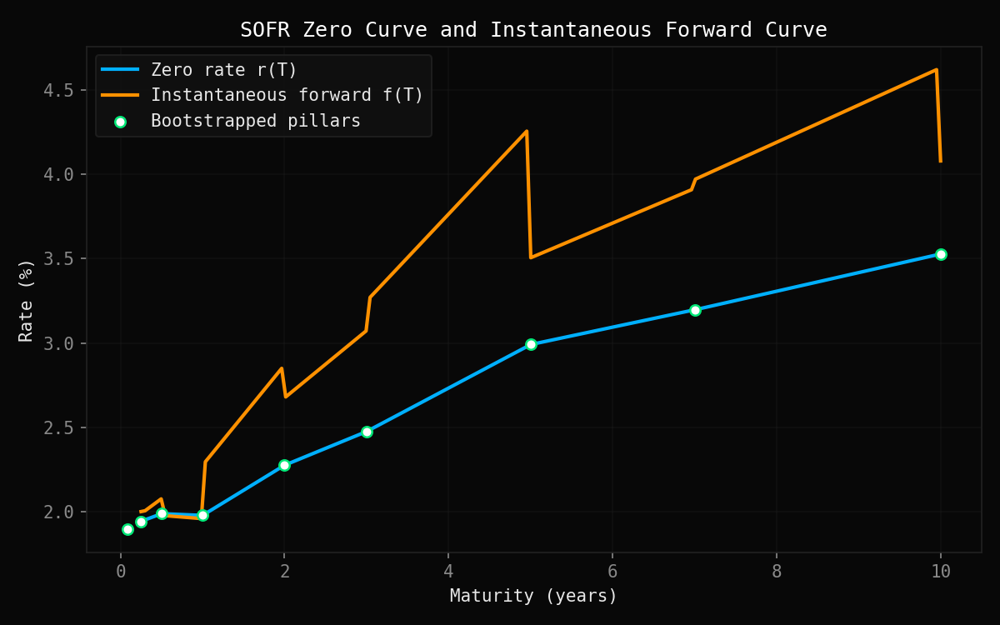
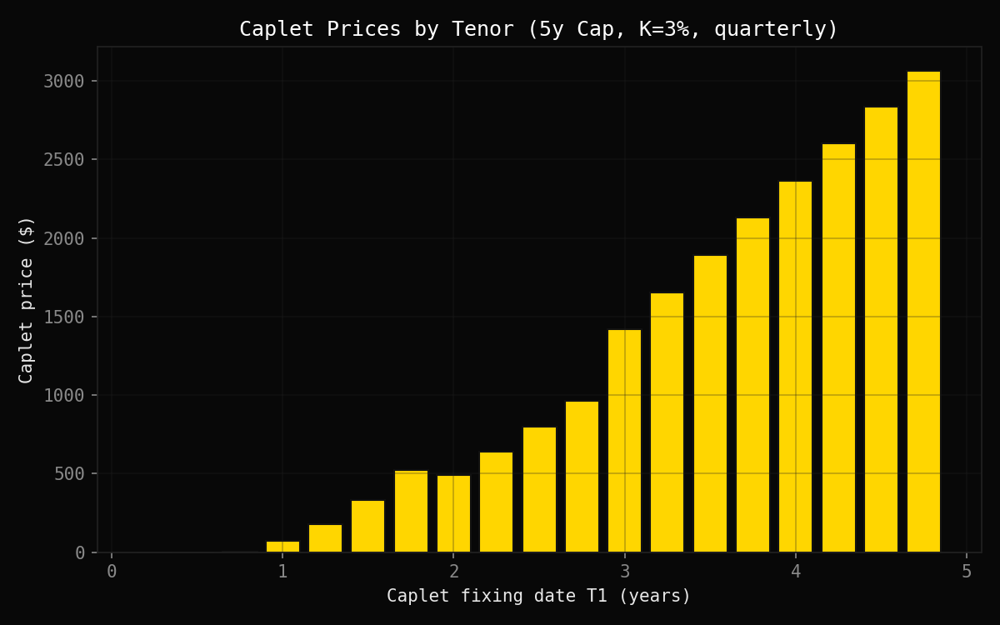
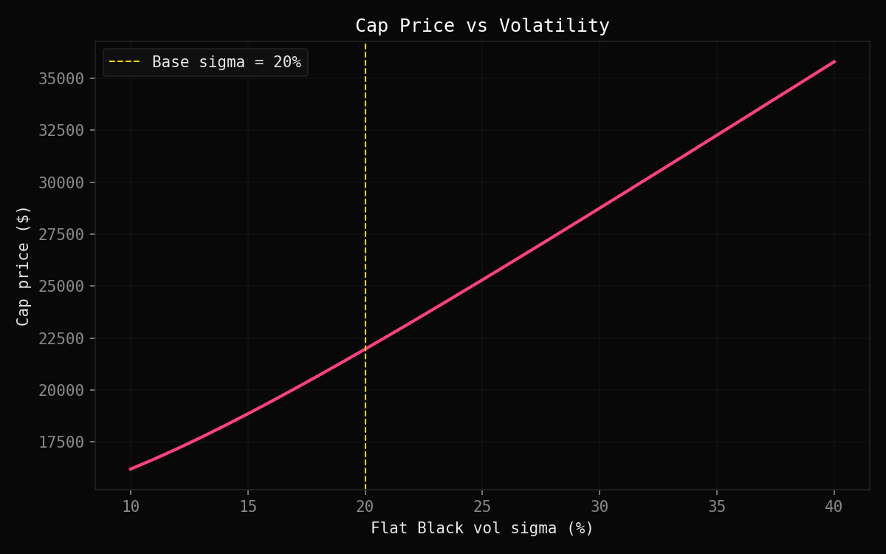

SOFR Swap Curve
Calibration & Cap Pricing
Bootstraps a SOFR zero-coupon curve from market swap rates, then prices a vanilla interest rate cap using Black-76 — DV01 and Vega by bump-and-reprice. No QuantLib.
Interest rate derivatives are the largest derivatives market in the world. At their core sits a single object: the discount curve. Before you can price anything — a swap, a cap, a swaption — you need to know what a dollar at a future date is worth today. That curve doesn't come for free; it has to be inferred from the instruments the market actually quotes.
Since 2023, SOFR (Secured Overnight Financing Rate) has replaced LIBOR as the benchmark for USD interest rate derivatives. This project builds the full pricing pipeline from scratch on a SOFR curve: bootstrapping the discount curve from market swap rates, then pricing a vanilla interest rate cap — one of the most common hedging instruments for floating-rate borrowers — using Black's model.

ZERO CURVE & INSTANTANEOUS FORWARD RATE
The first step is building the discount curve. Markets quote par swap rates, not zero rates directly — each par rate is a weighted average over several discount factors, not a clean rate at a single maturity. Bootstrapping inverts this: discount factors are solved sequentially from short to long tenors, each isolated using those already computed.
An earlier version used a cubic spline for smoothness, but it produced a spurious dip between the 6m–1y pillars and an overshoot above 7% on the forward curve between 7y–10y. Linear interpolation was chosen instead: kinked but truthful beats smooth but wrong.
Once the curve is built, we price a vanilla interest rate cap — a product that protects a floating-rate borrower against rising rates. A cap is simply a strip of independent caplets, one per accrual period: the cap price is the sum of individual caplet prices.
Because a forward rate isn't a tradeable asset, standard Black-Scholes doesn't apply. Black-76 assumes the forward rate is lognormal under the $T_2$-forward measure — the market standard for rate optionality. The first period is excluded since its rate is already fixed at inception and carries no optionality.

CAPLET PRICES BY TENOR — K = 3%, σ = 20%

CAP PRICE VS FLAT VOLATILITY σ — 10% to 40%
Both sensitivities are computed by bump-and-reprice, but they differ in what gets bumped. DV01 shifts all swap rates by +1bp and runs a full re-bootstrap before repricing — because rates are curve inputs, not just pricing parameters, any rate move changes the entire discount curve first.
Vega only bumps $\sigma$ by +1%, leaving the bootstrapped curve untouched. The chart confirms the relationship is nearly linear across the 10%–40% vol range — the cap is long vega, and sensitivity scales predictably with the vol level.
SOURCE CODE
Full implementation on GitHub — curve.py, cap_pricing.py, sensitivities.py, theory comments throughout.